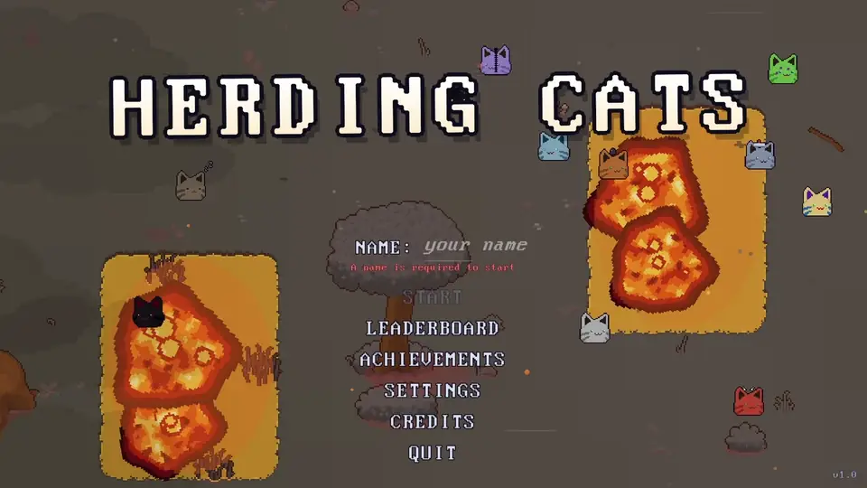
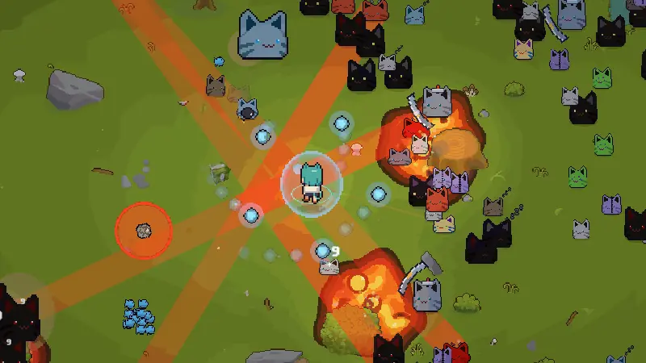
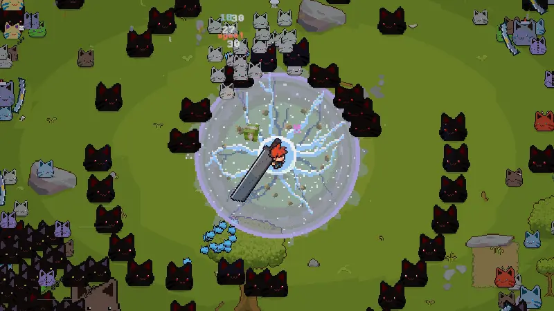
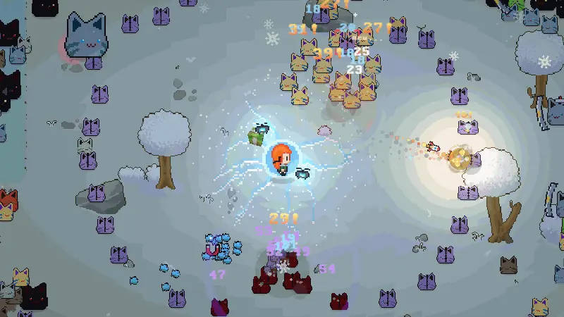
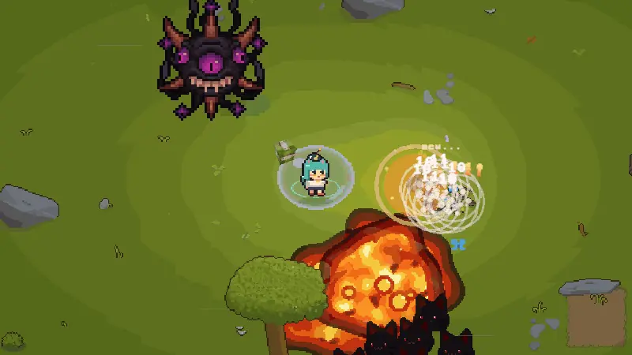

You drop into a map packed with slime cats that just keep coming. Your hero attacks on their own, so your job is to move, dodge, and grab the XP gems the cats leave behind. Every level-up you pick an upgrade: new weapons, skills, passives, or stat boosts. Some of them combine into stronger combos, so every run turns into a different build. Survive long enough and a boss shows up to end the party.
Solo Developer: I built the whole game on my own, from the core gameplay and upgrade combos to the enemy waves, UI, and leaderboard.
Pick your hero, pick a map (Meadow, Winter, or Volcano), and see how high you can climb on the leaderboard.
The game is heavily inspired by HoloCure. I loved how it takes the “survive the horde” formula and makes it cute, chaotic, and full of personality, especially the way weapons combine into something new. I wanted my own spin on that feeling, with cats instead of fans.
I’ve always loved roguelikes. There’s nothing like the “one more run” pull, when every run feels a little different depending on what you pick. Making one has been on my list for a long time, so Herding Cats is me finally doing it.




